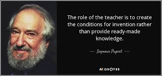

Teaching philosophy

“It is essential to see lectures as a means of helping students learn to think about the key concepts of a particular subject, rather than primarily as a means of transferring knowledge from instructor to student.”
Teaching philosophy
- Open source text-based material (for collaboration), available online
- Links to a lot of freely available material
- Lots of questions to force thinking / active learning
- Freedom to choose a variety of application projects
Given those course design choices:
- Be active: take part in brainstorming exercises and questions
- Be creative in your projects
- Don’t hesitate to ask questions and reach for help
- Give feedback: The course is a living document, please suggest improvements!
Soft skills: learning
- Deliberate practice (Focus, challenge, feedback, repeat!)
- Deconstruct skills (music, sport, coding…)
- Learn from contradictory views, from your “opponents” (climate deniers, politics, some large companies…), or apparently unrelated fields
- Be open to change
- How to get better at the things you care about? Alternate between learning zone and performing zone
- Scott Young: Interesting blog on learning strategies
- Mistakes are not failure, only learning
Thoughts on last year’s feedback
How the course was organised
- 4 themes: hydrology, hydraulics, “catchment scale flooding” and “urban stormwater (SW)”
- Course material prepared as a website
- Hosted open source on github: allows anonymous feedback whenever
- Evaluation on group project work (report + presentation) and an individual exam
- Individual exam: questions on main project, secondary project and course material (20min)
- Grade ratio: 75% group work + 25% individual assessment
Other people involved
- Kyrre Groven from Vestlandforskning: introduction to SW management
- Eli Heiberg: green SW infrastructure
- Deborah Davies: natural flood management
- Kristian Karlsen and Jarle Stølen from Sogndal kommune: 3-water excursions
- Svein Vågane from NVE, Førde: Laerdal / Flåm excursion
External lecturers
- Their style was quite different from mine
- I felt they came as a good complement
- No mention in the comments except that content was repeated once (heat island and green walls)
Excursions
- Everyone was happy!
- Presentation and visit of the Sogndal kommune (2 afternoons): very interested insight into both management issues and engineering details.
- Laerdal / Flåm: Svein was very generous in explanations. Was a bit long for students
Feedback on the question-based teaching style
- Good for the more extrovert students
- The introvert students felt a bit agressed at the start
- Lack of design skill for exercises led to unclear exercises
- Students complained about this but did not ask enough questions
- They need recipes but it may only make things worse in the long term
- So unclear exercises are not necessarily bad for them!
- Need to find the balance between spoon-feeding and lack of clarity
Feedback on my teaching style
- Not enough steps in exercises
- Jump around in thoughts
- Talked too quickly
- Was very helpful and dedicated
- I think I try to share too much!
Teaching style: my opinion
- Pros: productive struggle
- Cons: problem with prioritizing content
- Improvement: color codes for each type of slide (i.e. key content, exercises, example…)
- Stressful for some students (less extrovert)
- Improvement: let them be, and do more exercise sessions
Content delivery
- Liked the organisation as the website
- Complained that the course structure changed a few times
- Liked having most the lectures before project work
- Would like more time to do reading and exercises
Content delivery: improvements
- Need more exercise sessions
- Personal exercise sessions would be great but requires much time
- Sessions could be 2hrs + 1 hour exercises for the motivated
Content
- Strong divide between people who thought it was useful to get more into water science, and the others
- Some thought I presented a good overview, others thought it lacked perspective
- Too much science, not enough management
- Too many things and everything in brief
- A few seem to have blocked on the fact that they had other expections
Content: my opinion
- We can debate it forever
- We should to a certain extent but should also focus on general skills
- I did the latter but did not prioritize correctly (ram pump example)
- Being clearer on the why of the course content: Which concepts are key to know and which are only introduced to build general skills (21st century skills)
- Also need to communicate better on this philosophy at the start
- Follow a dummy catchment throughout the course to give perspective
- Change course name: Water resources
Content prioritization
- I think I missed the wrap up of the course a bit
- Had a list of keywords but ended up leaving it to everyone’s responsibility to arrange them for each project.
- Better way: have group exercises every few lectures to make mind maps of what has been covered, and go back to them for the final lecture
- This could be within a big exercise session
- 1 positive comment, no negatives
- Shy students did not try, should maybe introduce kahoot next time, although not everything will be digital in real life…
- I like the concept but need to be much stricter on the theme
- Only 1 quiz per week is a realistic frequency
- Could be linked to an exercise session or a quick recap on the previous sessions
The project teams and ideas were (almost) not imposed. I tried to come up with a lot of suggestions from different focus points so that the projects can come as a complement to what was not covered in detail in the course. I feel the day devoted to discussing each project for 1h was worth it and should be kept.
Having such various projects makes the grading harder but complements the course material very well, giving a more complete course experience.
- Unclear at the start: I agree but I also have the feeling students don’t read very thoroughly the guidelines
- Very varied project suggestions: some liked it, some criticized the grade-ability
- Second project idea worked really well: the students did almost all the questioning during the group presentations
- Maybe the unclear grading helped produce good work…
Evalution: my opinion
- We need to decide what we want: differentiating students or making them work
- The A-E/F system is not the best for differentiating if most students have worked well. Plus and minuses (i.e. A-) would help!
- Quite a few are going for the grade but do it well!
- I should leverage the concept of “course requirement” more
Erosion
A bit light on the erosion lecture but on the other hand, students seemed to have had enough “heavy” material at this point
Alternative land use
I ran a bit through the material. There were maybe too many links in the further resources section but on the other hand, this whole topic was more formulated as a theme of further study for those interested.
Debriefing with the censor
Group exam
- Good overall quality and amount of work put into the projects.
- Students could have spent 1/2 days going over the homogeneity of the reports and fix some last details.
- The “secondary project” concept worked well to get them to ask questions and helped them prepare for the individual exam. The questions were also very good.
- The structural problems found in the reports were improved during presentations
- GIS should be encouraged or suggested as group projects and kept out of the course content.
- Could show the projects from the previous year for the students to decide better and know what is good and bad.
Individual exam
- Very good analysis of own and “secondary” project by almost all students.
- Good general understanding of the course material with 3 students above average and 3 below.
- Quite impressed by the best students.
- We shared the philosophy that grades are only a part of the evaluation.
- We therefore gave individual oral feedback to each student based on course participation, group work and presentations. We have the feeling that it was beneficial to a majority of them.
Individual exam
- Our test of the course material was adapted to each student’s ability and taken into account for the grading. We also tried to ask questions on the course material that were linked to the topics tackled on both projects (main and secondary).
- We tested their problem solving ability by linking additional concepts to course material. We were quite satisfied by the reaction to these questions.
- We think this type of exam is a good practice for later job interviews.
- Some students learned more course material through their project than the social project people.
Individual exam
- Be clear from the start that the projects are very free to alllow people to dig into “management” if they feel it will missing from the course.
- We are quite satisfied by the “secondary project” as a evaluation tool. It probably helped the students prepare for the exam.
- We could have some homework exercises as part of the grading, or at least the course requirements.
- At NTNU you need to do 8 out of 12 exercises (over the course of a semester)
Potential improvements
- Along with the prioritizing of the content, some parts could be left as optional for project work.
- Could almost have red/yellow tags: red is compulsory. If you don’t do it, you drop by 1 grade step.
- If you do, you stay. If you exceed you go up 1.
Course requirements
- Have clear and very central exercises to do at home as course requirements. Solutions would be given once everyone has passed.
- Ill-posed and open problems could be tackled in groups during class sessions. They could also be suggested by the students and discussed together.
- Be quite strict with the course requirements so that everyone learns, and then tough on the final exam to distinguish the best.
- The grading would remain difficult if projects are varied.
Evaluation
- The rules related to uneven ratios between multiple exams were actually well explained in the documents given to the censor.
- The order of the candidate numbers should be always in the same order, to avoid confusion and mistakes.
- The censor will go through the course material to comment further.